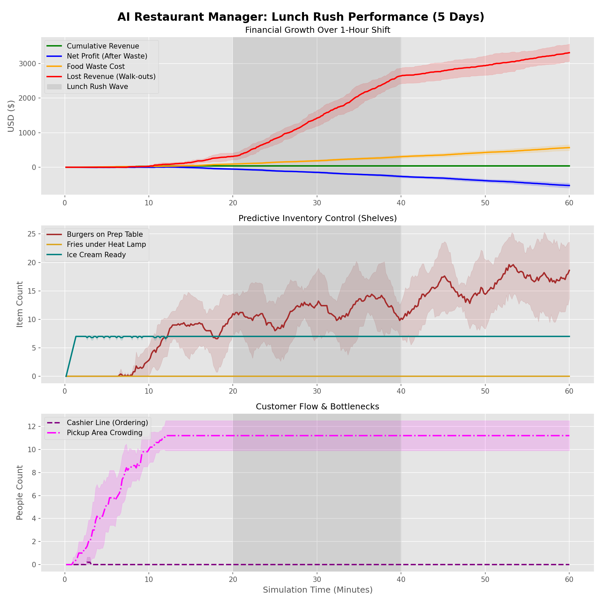

Project Overview
FastFoodSim is a sophisticated Discrete-Event Simulation (DES) designed to model the operational complexity of high-volume food service. It serves as a benchmark for Reinforcement Learning (RL) agents tasked with real-time resource management.
Note
This project was designed to bridge the gap between pure algorithmic RL and real-world Operations Research (OR) constraints. Read the full technical breakdown in our Medium article: Optimizing Production-Line Management using Python.
System Architecture
The core simulation engine is powered by SimPy. Unlike standard “step-based” games, every action in this environment has a temporal cost.
Non-Stationary Poisson Process: Customer arrivals follow a dynamic rate that peaks during the “Lunch Rush” (20–40 minute mark).
Stochastic Service Times: Cashier interactions and burger cooking utilize triangular distributions to simulate human variability.
{kind=link}

Hint
Look at the “Predictive Inventory Control” plot above. A successful agent begins stockpiling burgers at minute 18, just before the gray rush window begins.